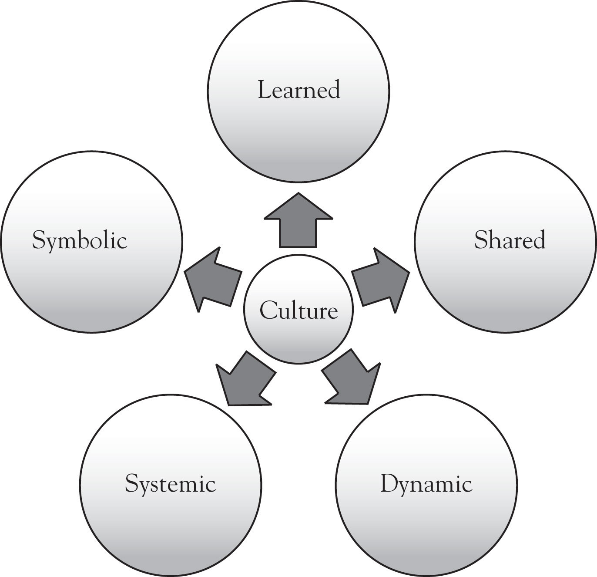

Definitions of culture cover a wide range of perspectivesIdeas or point of view based on one’s experiences and background.. When I ask participants in my business workshops to describe culture, the following are words and phrases they use: food, religion, language, music, region or geography, ethnicity, clothes, and so on. Generally, there is always one person who raises his or her hand timidly and says, “I think culture is more than that. It’s the things we don’t see, like our beliefs or views about gender.” Both are correct—culture represents the things we see, the tangible, as well as the intangible things.
Figure 2.1 Iceberg Metaphor
The iceberg, a commonly used metaphor to describe culture, is a great example for illustrating the tangible and the intangible. When talking about culture, most people focus on the “tip of the iceberg,” which is considered as making up 10% of the object. The rest of the iceberg, 90% of it, is below the waterline. Most leaders in businesses, when addressing intercultural situations, pick up on the things they see—things on the “tip of the iceberg.” This means that they never address the cultural issues and problems that are underneath the surface level. Solutions become temporary band-aids covering deeply rooted cultural systems.
I once had a manager describe and define culture as “a monster.” After some laughter from the group, he clarified his statement: “It’s so messy and sometimes it’s too big to handle. And, it’s scary because you don’t know what you’re dealing with.” What he said rings true for many people and businesses that work in multicultural settings. It is certainly not fun to clean up cultural messes, bloopers, or misunderstandings, and when not addressed right away, they can result in large cultural conflicts. The ability to acknowledge one’s cultural mistakes, and having a commitment to learning what culture brings, is a skill that one must have in cultural intelligence work.
This definition of culture as a “monster” is one that looks at culture and its manifestations. Some may even say it is negative and does not paint culture in a positive light. From my experiences working with leaders, defining culture is not about positives or negatives—culture just is, and that is why it can be a challenge to describe it. Definitions of culture usually incorporate an expression of values and beliefs of groups, the learning that occurs in groups, and the expressions of those cultural norms.
The following is a definition of culture that is used in this book and that will be useful in your work:This definition of culture has been adapted from Edgar Schein’s definition of culture.
Culture consists of the shared beliefs, values, and assumptions of a group of people who learn from one another and teach to others that their behaviors, attitudes, and perspectives are the correct ways to think, act, and feel.
It is helpful if you can think about culture in the following five ways:
Figure 2.2 Elements of Culture
